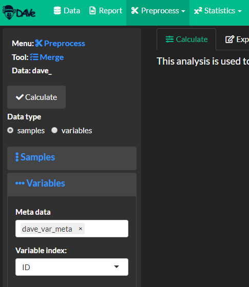
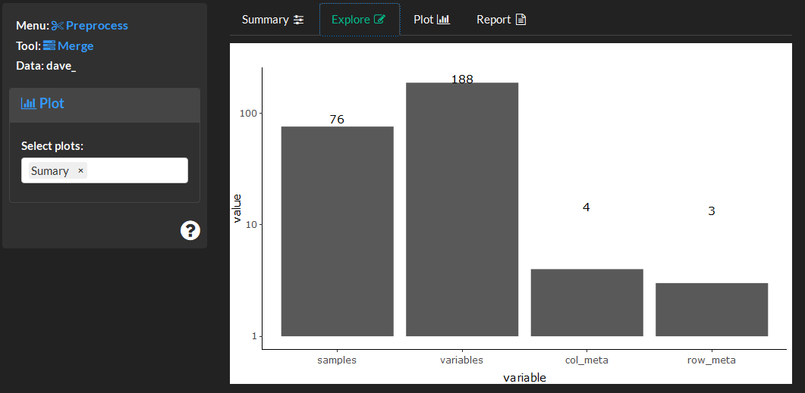
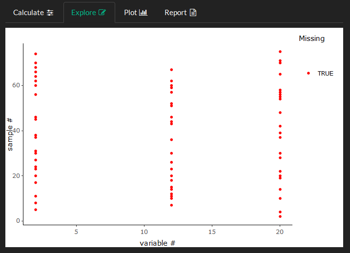

2 Preprocess
The preprocess module is used to merge, filter and prepare the data for analysis.
Merge
This analysis is used to identify experimental design factors and merge numeric and variable metadata. The induvidual data components to merge should be related as shown below. See the preprocess for more details.

Calculate
Select sample meta data (e.g. non-numeric descriptors of the experimental design) which will be added to the _row_meta object and made available to use in visual mapping and analysis/calculation controls.

Identify and add column or measurement meta data, wherein ID sets the unique row identifier (e.g. row number).

View merge summary.

Explore and Plot
Visualize a summary of the merged data.

Save the merged data for further analyses.

Missing
This analysis can be used to identify and remove variables with missing values. Specify a factor group of interest and the missing cutoff or percent acceptible missing for each level in the group. It is also useful to remove non-informative varibles or those with a standard deviation of zero using the remove zero variance option.
Calculate
Remove error prone variables with too many missing values or zero variance. Optionally select groups of samples to evaluate missing values.

Impute all missing values in the data. Replace based on a variety of summaries based on the present values.

Explore and Plot
View missing data for each sample and variable, overall and by class. Missing or zero variables shown in red are arranged based on their sample (row) and variable (column) number.

Flagged variables, or those containing greater or equal percent zero or missing values than the missing cutoff are shown in red for each level of a group `group``.

Save the filtered data for further analyses.